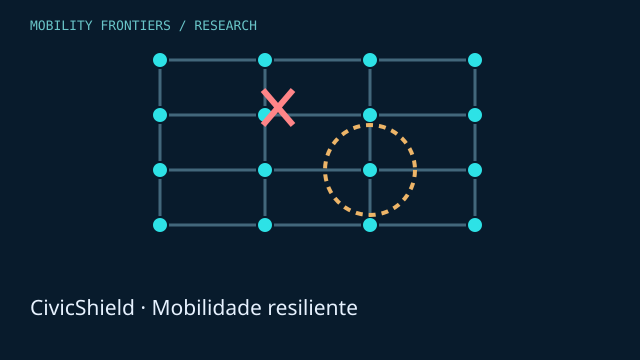

CivicShield · Mobilidade resiliente
Geração de cenários adversos e leilões de atendimento sensíveis à desigualdade geográfica.

Protótipo de pesquisa independente com dados sintéticos. Inovação é uma hipótese investigada, não superioridade ou revolução comprovada.
Pesquisa que pode evoluir para produto
Hipótese de inovação
Procurar falhas antes de otimizar médias: um gerador adversarial busca combinações de bloqueio e demanda que degradam o serviço. As políticas são avaliadas tanto pela conclusão total quanto pela zona menos atendida.
Implementação atual
Três redes diferentes: grade, rio com pontes e corredor em escada. Busca por elites/mutações escolhe eventos de estresse em seeds de desenvolvimento. Leilão heurístico aloca veículos; uma variante adiciona déficit por zona, outra adiciona penalidade por ruptura e reposicionamento com taxas de demanda aprendidas.
Experimentos e validação
36 configurações e 144 execuções de teste. Eventos e taxas são aprendidos em seeds de desenvolvimento; teste usa 7–10. Mede conclusão total, pior zona, disparidade geográfica e perda na pior seed. Caminhos respeitam os bloqueios e a frota é conservada.
Limites e resultados negativos
Dados sintéticos; equidade apenas geográfica, sem dados demográficos. CVaR25 com quatro seeds é somente a pior execução. A variante robusta conhece antecipadamente o trecho do evento: comparação inclui vantagem de informação. Não é MPC robusto, RL nem política pública validada.
Experimente as decisões
Selecione uma configuração e execute para carregar o resultado Python correspondente. A reprodução mostra a evolução temporal; não executa Python no navegador.
Loading…
Compare referências e propostas
Os resultados incluem políticas que perdem para referências simples. Explore o mesmo cenário e leia métricas individuais antes de concluir que aprendizado ou coordenação sempre ajudam.
Dados, hipóteses e procedência
Topologias, pedidos e eventos sintéticos; fechamento dos minutos 30 a 64 e pico de demanda dos minutos 30 a 59. Uma aresta representa 0,5 km por minuto. Taxas de demanda aprendidas são estimativas por contagem, não redes neurais.
Reproduza ou modifique
Extraia o ZIP e use Python 3.10 ou superior. Sem dependências externas. O README documenta parâmetros, seeds, unidades e limites.
python civicshield.py --output report.json
python -m unittest discover -vO próximo avanço a demonstrar
Validar com demanda e interrupções reais, ampliar amostras de cauda, remover a vantagem de informação em ablações e testar otimização com restrições explícitas de serviço por zona.
Inspecione a evidência
Parâmetros, resultados individuais e limitações
Loading…